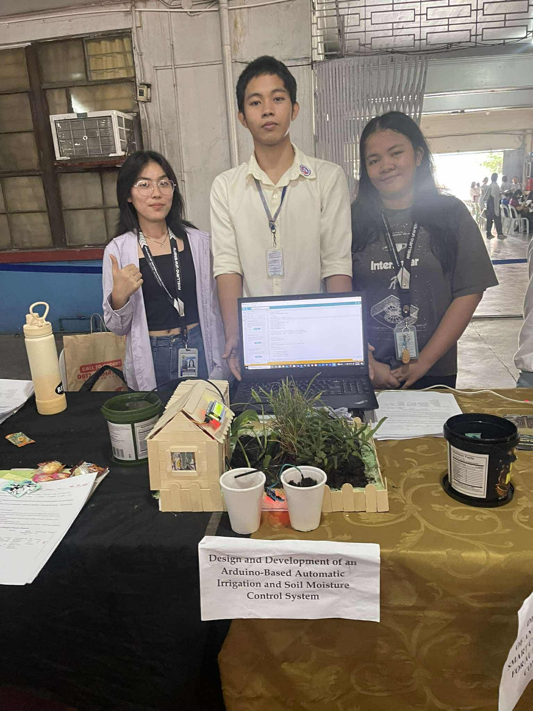

Arduino: Automatic Watering System
First Successful Convention
I would like to share with you my experience at my first programming-based convention, an event that truly opened my eyes to the world of technology, innovation, and creativity.
At first, I felt nervous. It was my first time joining a convention focused on programming, and I was surrounded by people who were confident, skilled, and passionate about technology. However, as the event went on, that nervousness slowly turned into excitement and inspiration. I realized that this convention was not just about competition, but about learning, sharing ideas, and improving ourselves.
For this convention, our project was an Automatic Watering System using Arduino. The main goal of this project is to help plants receive the right amount of water without human intervention. The system uses a soil moisture sensor to detect the moisture level of the soil. When the soil becomes dry, the Arduino automatically activates a water pump to supply water to the plants. Once the soil reaches the proper moisture level, the system turns the pump off. This makes watering more efficient and prevents both overwatering and underwatering.
This project is very useful, especially for farmers, gardeners, and even homeowners who may not always be available to water their plants. It also promotes water conservation, which is very important in today’s world.
Presenting our project at the convention was a memorable experience. We were able to explain how the system works, answer questions, and receive feedback from judges and other participants. Through this, I learned not only technical skills like coding and circuit design, but also important life skills such as teamwork, communication, and problem-solving.
In conclusion, my first programming-based convention was a challenging but rewarding experience. It motivated me to continue learning more about programming and technology. The Automatic Watering System using Arduino may be a simple project, but it represents a big step in my journey as a future programmer and innovator.
Thank you for listening, and have a great day.